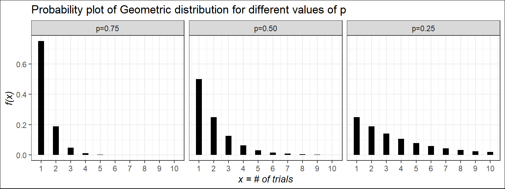
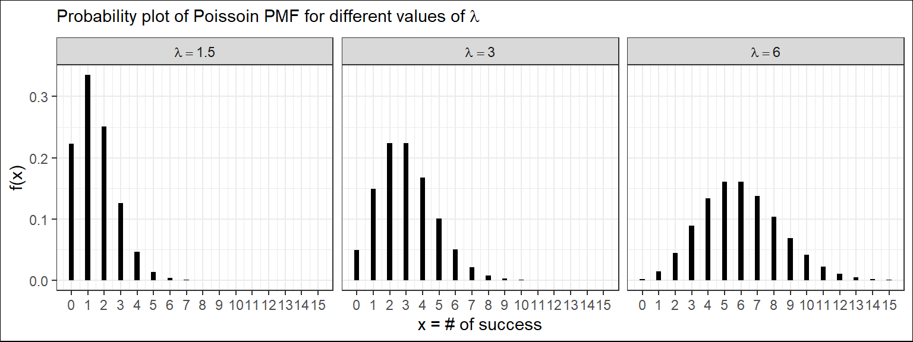

In many situations, it is desirable to assign a numerical value to each outcome of a random experiment. Such an assignment is called a random variable.
Mathematically, a random variable is a real-valued function of the experimental outcome.
Definition: A random variable is a function that associates a real number with each element in the sample space.
Note
We shall use a capital letter, say \(X\), to denote a random variable and its corresponding small letter, \(x\) in this case, for one of its values.
Illustration: Two balls are drawn in succession without replacement from an urn containing 4 red balls and 3 black balls.
Let, \(Y\) is the number of red balls.
The small letter \(y\) is the numerical value for each possible outcomes.
The possible outcomes and the values of \(y\) of the random variable \(Y\) are:
Sample space
\(y\)
\(RR\)
2
\(RB\)
1
\(BR\)
1
\(BB\)
0
Since the values of \(Y\) is determined by a random experiment so, \(Y\) is a random variable (discrete).
3.1Types of random variable
There are two important types of random variables, discrete and continuous.
A discrete random variable is one whose possible values form a discrete set; in other words, the values can be ordered, and there are gaps between adjacent values. The random variable Y, just described, is discrete.
In contrast, the possible values of a continuous random variable always contain an interval, that is, all the points between some two numbers.
3.2 Discrete random variable and Probability mass function
Suppose \(X\) is a discrete random variable. The probability mass function (PMF) of \(X\) can be denoted as \(f(x)\) where
\[f(x)=P(X=x)\] For each possible outcome \(x\) ; \(f(x)\) must satisfies:
\[f(x) \ge 0\]
\[\sum _x f(x)=1\]
3.2.1 The Cumulative Distribution Function of a Discrete Random Variable
A function called the cumulative distribution function (CDF) specifies the probability that a random variable is less than or equal to a given value. The cumulative distribution function of the random variable \(X\) is the function
\(F(x) = P(X \le x)\)
Example 3.1: Calculating probabilities A certain industrial process is brought down for recalibration whenever the quality of the items produced falls below specifications. Let \(X\) represent the number of times the process is recalibrated during a week, and assume that \(X\) has the following probability mass function.
\(x\)
0
1
2
3
4
\(f(x)\)
0.35
0.25
0.20
0.15
0.05
Compute the following :
i) \(P(X=2)\);
ii) \(P(X<3)\) and \(P(X>2)\);
iii) \(F(2)\)
Example(Walpole et al. 2017, Example 3.8)A shipment of 20 similar laptop computers to a retail outlet contains 3 that are defective. If a school makes a random purchase of 2 of these computers, find the probability distribution for the number of defectives.
Solution: Let \(X\) be a random variable whose values x are the possible numbers of defective computers purchased by the school. Then \(x\) can only take the numbers 0, 1, and 2. Now ,
Example(Baron 2019, Exercise 3.1 (a)) A computer virus is trying to corrupt two files. The first file will be corrupted with probability 0.4. Independently of it, the second file will be corrupted with probability 0.3.
Compute the probability mass function (PMF) of \(X\), the number of corrupted files.
Solution: (Will be discussed in class)
3.2.2 Expectation (Population Mean) of discrete random variable
Let \(X\) be a discrete random variable with probability mass function \(f(x) = P(X = x)\).
The mean of \(X\) is given by
\[\mu=\sum_x x.f(x)\]
The mean of \(X\) is sometimes called the expectation, or expected value, of X and may also be denoted by \(E(X)\) or by \(\mu\).
Example 3.2 : Let \(X\) represent the number of times the process is recalibrated during a week, and assume that \(X\) has the following probability mass function.
\(x\)
0
1
2
3
4
\(f(x)\)
0.35
0.25
0.20
0.15
0.05
Compute the mean or expected value of \(X\).
Solution:
The expected value of \(X\) is:
\[\mu =E[X]=\sum_{x=0}^4 x.f(x) \]
\[=0(0.35)+1(0.25)+2(0.20)+3(0.15)+4(0.05)=1.30\]
3.2.3 Variance (population) of discrete random variable
Let \(X\) be a discrete random variable with probability distribution \(f(x)\) and mean \(\mu\). The variance of \(X\) is
Example 3.2 : Let \(X\) represent the number of times the process is recalibrated during a week, and assume that \(X\) has the following probability mass function.
The standard deviation is the square root of the variance:
\(\sigma=\sqrt {var(X)}\)
NoteProperties of E(.) and var(.)
If \(a\) and \(b\) are constants, then
a) \(E(b)=b\)
b) \(E(aX+b)=aE(X)+b\)
c) \(var(b)=0\)
d) \(var(aX+b)=a^2 \ \ var (X)\)
Example Computer chips often contain surface imperfections. For a certain type of computer chip, the probability mass function of the number of defects X is presented in the following table.
\(x\)
0
1
2
3
4
\(f(x)\)
0.4
0.3
0.15
0.1
0.05
a. Find \(P(X \le 2)\).
b. Find \(P(X > 1)\).
c. Find expected value/average of \(X\).
d. Find variance and standard deviation of \(X\).
e. Also find \(E(2X+5)\) and \(var(2X+5)\).
3.3 Bernoulli r.v
Bernoulli r.v comes from Bernoulli trial-a trial which has TWO possible outcomes (success or failure).
Consider the toss of a biased coin, which comes up a head with probability \(p\), and a tail with probability \(1 - p\). The Bernoulli random variable takes the two values 1 and 0, depending on whether the outcome is a head or a tail:
\[X=1 ; if \ \ a \ \ head,\\
X=0 ; if\ \ a \ \ tail.\]
For all its simplicity, the Bernoulli random variable is very important. In practice, it is used to model generic probabilistic situations with just two outcomes, such as:
(a) The state of a telephone at a given time that can be either free or busy.
(b) A person who can be either healthy or sick with a certain disease.
(c) The preference of a person who can be either for or against a certain political candidate.
Furthermore, by combining multiple Bernoulli random variables, one can construct more complicated random variables.
NoteDerivation of Mean and Variance of Bernoulli r.v
Now, what is the probability that, we will have exactly 2 heads (success) in 3 tosses?
That is,\(P(X=2)=?\)
Now, this can happen in the following ways:
\[P(X=2)=P(HHT)+P(HTH)+P(THH)\]\[=P(H)P(H)P(T)+P(H)P(T)P(H)+P(T)P(H)P(H)\] [Since tosses are independent]
\[=p.p.q+p.q.p+q.p.p\]\[=p^2 q+p^2 q+p^2 q=3p^2 q\]\[\therefore P(X=2)=\binom{3}{2}p^2q^{3-2}\] If, \(p=0.6\) is given, then we can easily compute \(P(X=2)=f(2)\). Now, if we repeat the toss 10 times \((n=10)\), with \(P(H)=p\), what is the value of \(P(X=3)=f(3)\)?
NoteNote
\(n\) and \(p\) are said to be the parameters of the Binomial distribution.
\(f(x)=F(x)-F(x-1)\) i.e \(f(3)=F(3)-F(2)\)
If \(Y=number \ \ of \ \ failures\ \ in \ \ n\ \ trials\) then \(Y\sim Bin(n,1-p)\)
NoteRelation between Bernoulli r.v and Binomial r.v
A Binomial Random Variable Is a Sum of Bernoulli Random Variables
Let, \(Y_i\) is a Bernoulli r.v appeared in \(i^{th}\) Bernoulli trial. If we conduct \(n\) independent Bernoulli trials then we have \(n\) independent Bernoulli r.vs such as \(Y_1, Y_2, ..., Y_n\). Each \(Y_i\) has values of either \(1\) or \(0\).
Now if \(X\) is a Binomial r.v then,
\[ X=Y_1+Y_2+...+Y_n =\sum_{i=1}^n Y_i \]
NoteDerivation of Mean and Variance of Binomial r.v
From previous note, we know if \(Y_i\) is a Bernoulli r.v then
\(E(Y_i)=p\) and \(Var(Y_i)=p(1-p)\)
So, the mean of Binomial r.v that is
\[ E(X)=E(Y_1+Y_2+...+Y_n) \]
\[ =E(Y_1)+E(Y_2)+...+E(Y_n) \]
\[ =p+p+...+p=np \]
Now, the variance of\(X\)is:
\[ Var(X)=Var(Y_1+Y_2+...+Y_n) \]
\[ =Var(Y_1)+Var(Y_2)+...+Var(Y_n) \]
\[ =p(1-p)+p(1-p)+...+p(1-p)=np(1-p) \]
Probability plot of binomial r.v for different values of\(p\) and shape characteristics
library(tidyverse)
── Attaching core tidyverse packages ──────────────────────── tidyverse 2.0.0 ──
✔ dplyr 1.2.1 ✔ readr 2.2.0
✔ forcats 1.0.1 ✔ stringr 1.6.0
✔ ggplot2 4.0.3 ✔ tibble 3.3.1
✔ lubridate 1.9.5 ✔ tidyr 1.3.2
✔ purrr 1.2.2
── Conflicts ────────────────────────────────────────── tidyverse_conflicts() ──
✖ dplyr::filter() masks stats::filter()
✖ dplyr::lag() masks stats::lag()
ℹ Use the conflicted package (<http://conflicted.r-lib.org/>) to force all conflicts to become errors
In the end of any Statistics book there are some Probability Distribution Table. We can use these table to compute the required probability for specific values of the parameters of certain probability distribution. Here I share the 1st page of Binomial distribution table(Baron 2019).
Suppose, \(X\sim Binom(n,p)\); where \(n=5\) and \(p=0.6\). Find, (i)\(P(X=2)\)(ii)\(P(X \le 2)\)(iii)\(P(X \ge 3)\) using Table.
5.9 In testing a certain kind of truck tire over rugged terrain, it is found that 25% of the trucks fail to complete the test run without a blowout. Of the next 15 trucks tested, find the probability that: (a) from 3 to 6 have blowouts; (b) fewer than 4 have blowouts; (c) more than 5 have blowouts.
Solution:
Let, X= number of trucks that have blowouts
Given, \(n=15; \ \ p=Pr(blowout)=0.25; \ \ q=1-p=0.75\). Hence, \(X\sim Binom(n=15, p=0.25)\), that is:
5.12 A traffic control engineer reports that 75% of the vehicles passing through a checkpoint are from within the state. What is the probability that fewer than 4 of the next 9 vehicles are from out of state?
5.16 Suppose that airplane engines operate independently and fail with probability equal to 0.4. Assuming that a plane makes a safe flight if at least one-half of its engines run, determine whether a 4-engine plane or a 2-engine plane has the higher probability for a successful flight.
5.25 Suppose that for a very large shipment of integrated-circuit chips, the probability of failure for any one chip is 0.10. Assuming that the assumptions underlying the binomial distributions are met, find the probability that at most 3 chips fail in a random sample of 20.
3-93 Let \(X\) be a binomial random variable with \(p = 0.1\) . and \(n = 10\). Calculate the following probabilities from the binomial probability mass function and from the binomial table in Appendix A and compare results. (a) \(P(X\le 2)\) (b) P(X>8) (c) P(X = 4) (d) \(P(5 \le X \le7)\)
3-115 The probability that a visitor to a Web site provides contact data for additional information is 0.01. Assume that 1000 visitors to the site behave independently. Determine the following probabilities: (a) No visitor provides contact data. (b) Exactly 10 visitors provide contact data. (c) More than 3 visitors provide contact data
3.21. A lab network consisting of 20 computers was attacked by a computer virus. This virus enters each computer with probability 0.4, independently of other computers. Find the probability that it entered at least 10 computers.
3.22. Five percent of computer parts produced by a certain supplier are defective. What is the probability that a sample of 16 parts contains more than 3 defective ones?
And so on….
3.5 Geometric r.v
The number of Bernoulli trials needed to get the first success has Geometric distribution.
Let \(X\) be the number of trials needed to get the first success.
PMF:
\(P(X=x)=P(the\ \ 1^{st} \ \ success \ \ occurs \ \ in \ \ the \ \ x^{th\ \ trial})\)
a) \(\sum_{x=1}^\infty f(x)=\sum_{x=1}^\infty (1-p)^{x-1}p=1\)
b) \(E(X)=\frac{1}{p}\)
c) \(Var(X)=\frac{1-p}{p^2}\)
We write,\(X\sim Geom(p)\)
Probability plot for different values of\(p\)
##| label: fig-figgeom##| fig-height: 3#rm(list = ls())library(tidyverse)trials <-1:10fx=0gx=function(x,p){for (i in x) { fx[i]=p*(1-p)^(x[i]-1) } fx}#gx(c(1,2,3),0.9)#gx(trials,0.9)g1<-gx(trials,0.75)g2<-gx(trials,0.5)g3<-gx(trials,0.25)g_wide.df<-data.frame(trials,g1,g2,g3)#wide.dfg_wide.long<-g_wide.df%>%gather(key ="p",value ="prob",-trials)#head(wide.long)#g_wide.long %>% str()g_wide.long%>%ggplot(aes(trials,prob))+geom_col(width =0.4,fill="black")+facet_wrap(~p,labeller =as_labeller(c("g1"="p=0.75","g2"="p=0.50","g3"="p=0.25") ) )+scale_x_continuous(breaks =1:10)+labs(x="x = # of trials",y="f(x)",title ="Probability plot of Geometric distribution for different values of p", #subtitle =expression(n==10) )+theme_bw()+theme(axis.title =element_text(face ="italic"),plot.background =element_rect(color ="black"))

The probability plot illustrates that as the value of (\(p\)) increases, the likelihood of achieving the first success at an earlier trial also increases.
Memorylessness property of Geometric distribution
Let \(X\) be the number of trials needed to get the first success and \(X\sim Geom(p)\) .Suppose that we have been watching the process for \(n\) trials and no success has been recorded. What is the probability that in additional \(k\) trials we will observe the first success? Mathematically,
\[P(X=n+k|X>n)=?\]
It can be shown that:
\[P(X=n+k|X>n)=P(X=k)\]
It implies that the probability of needing \(k\) more trials, given that we’ve already had \(n\) failures, is the same as the original probability of needing \(k\) trials to get the first success. This is known as memorylessnessproperty.
Real life examples
A search engine goes through a list of sites looking for a given key phrase. Suppose the search terminates as soon as the key phrase is found. The number of sites visited is Geometric.
A hiring manager interviews candidates, one by one, to fill a vacancy. The number of candidates interviewed until one candidate receives an offer has Geometric distribution.
Example 5.15 (Walpole): For a certain manufacturing process, it is known that, on the average, 1 in every 100 items is defective. What is the probability that the fifth item inspected is the first defective item found?
Example 5.16 (Walpole): At a “busy time,” a telephone exchange is very near capacity, so callers have difficulty placing their calls. It may be of interest to know the number of attempts necessary in order to make a connection. Suppose that we let p = 0.05 be the probability of a connection during a busy time. We are interested in knowing the probability that 5 attempts are necessary for a successful call.
Quite often, in applications dealing with the geometric distribution, the mean and variance are important. For example, in Example 5.16, the expected number of calls necessary to make a connection is quite important. So, we can easily compute mean and variance of a Geometric r.v.
Exercise 5.55 (Walpole) The probability that a student pilot passes the written test for a private pilot’s license is 0.7. Find the probability that a given student will pass the test
(a) on the third try;
(b) before the fourth try
Exercise 3.24 (Michael Baron). An internet search engine looks for a certain keyword in a sequence of independent web sites. It is believed that 20% of the sites contain this keyword. Compute the probability that the search engine had to visit at least 5 sites in order to find the first occurrence of a keyword.
A memoryless Customer Service Call center
A customer calls a tech support center, which takes independent attempts to resolve an issue. On each call, there is a 20% chance that the issue is resolved.
What is the probability that the issue will be resolved after the 4th call?
Suppose the customer has already called 4times and the issue is still unresolved. What is the probability that it will still take more than 3 additional calls to get the issue resolved?
Explain why the answer in (b) makes sense in terms of the memoryless property.
NoteDerivation and proofs related to Geometric distribution
1) Memorylessness property
Proof:
PMF of Geometric r.v is : \(f(x)=q^{x-1} p \ \ ; x=1,2,...,\infty\) with \(q=1-p\).
To derive the variance of geometric distribution, differentiate (A) w.r.t \(q\) again. After some manipulation and using (B) we will have
\[Var(X)=\frac{1-p}{p^2}\]
3.6 Poisson r.v
The number of events occur randomly in an interval or in a region usually follows Poisson distribution. A famous French mathematician SimB4eon-Denis Poisson (1781–1840) first introduced this distribution.
Example
The Poisson distribution may be useful to model variables like:
The no. of calls arrive at a customer care in 15 minites
The no. of arrivals at a car wash in one hour
The no. of repairs needed in 10 miles of highway
The no. of leaks in 100 miles of pipeline etc.
Usually Poisson distribution is used to evaluate probability of “Rare” event.
The probability mass function of the Poisson random variable \(X\), representing the number of outcomes occurring in a given time interval denoted by \(t\), is:
Here, \(\lambda\) is called arrival rate or average number of occurrences in long-run. And only parameter of Poisson distribution.
Mean: \(\mu=E(X)=\lambda t\)
Variance: \(\sigma^2 =\lambda t\)
We write:\(X\sim Pois(\lambda t)\)
N.B: The mean and variance of Poisson random random variable are identical. This is the unique property of Poisson r.v.
Probability of plot of poisson r.v for different values of\(\lambda\) (for a fixed interval \(t=1\))
success <-0:15ps1<-dpois(success,1.5 )ps2<-dpois(success,3 )ps3<-dpois(success, 6)wide.ps<-data.frame(success,ps1,ps2,ps3)#wide.pslong.ps<-wide.ps%>%gather(key ="p",value ="prob",-success)#head(long.ps)long.ps$p<-factor(long.ps$p,labels =c("lambda=={1.5}","lambda=={3}","lambda=={6}"))#head(long.ps)long.ps%>%ggplot(aes(success,prob))+geom_col(width = .3,fill="black")+facet_wrap(~p,labeller = label_parsed)+scale_x_continuous(breaks =0:15 )+labs(x="x = # of success",y="f(x)",subtitle =expression(paste("Probability plot of Poissoin PMF for different values of"," ",lambda )))+theme_bw()+theme(plot.background =element_rect(color ="black"))

We can see that, for small \(\lambda\) the distribution of Poisson r.v is positively skewed and as the value of \(\lambda\) increases the distribution tends to symmetry.
Finding Poisson probability
Consider a discrete r.v say \(X\sim Pois(\lambda t)\). Suppose, \(\lambda =1.5\) and \(t=2\). Find, (i) P(X=4) (ii)\(P(X \le 2)\) (iii) \(P(X\ge3)\).
Solution:
PMF of \(X\): \(P(X=x)=f(x)=\frac{e^{-\lambda t}(\lambda t)^x}{x!}; x=0,1,...,\infty.\)
We can use Poisson distribution table to compute Poisson probabilities. Here I share the 1st page of Poisson distribution table(Baron 2019).
Consider a discrete r.v say \(X\sim Pois(\lambda t)\). Suppose, \(\lambda =1.5\) and \(t=2\). Find, (i) \(P(X \le 2)\) (ii)P(X=4)
Solution by using Table:
For \(t=2\) , \(\mu=\lambda t=1.5*2=3\).
(i)\(P(X \le 2)=F(2)=0.423\)
[For x=2 and \(\mu \ \ or \ \lambda =3\); corresponding probability in Table A3 is 0.423]
(ii)\(P(X=4)=f(4)=F(4)-F(3)=0.815-0.647=0.168\)
Example 5.17:(Walpole et al. 2017) During a laboratory experiment, the average number of radioactive particles passing through a counter in 1 millisecond is 4. What is the probability that 6 particles enter the counter in a given millisecond?
Example 5.18:(Walpole et al. 2017) Ten is the average number of oil tankers arriving each day at a certain port. The facilities at the port can handle at most 15 tankers per day. What is the probability that on a given day tankers have to be turned away?
Example 3.8:[(Pishro-Nik 2014)] The number of emails that I get in a weekday can be modeled by a Poisson distribution with an average of 0.2 emails per minute.
What is the probability that I get no emails in an interval of length 5 minutes?
What is the probability that I get more than 3 emails in an interval of length 10 minutes?
Solution
Let, \(X\)=number of emails that I get in a given interval.
Given, \(\lambda =0.2 \ \ min^{-1}\).
\(X\) will follow \(Pois(\lambda t)\)
1. In this case \(\mu=\lambda t=0.2*5=1\). So, \(P(X=0)=f(0)=e^{-\mu}=e^{-1}=0.3679\).
2. In this case \(\mu=\lambda t=0.2*10=2\). So,\(P(X>3)=1-P(X\le 3)=1-F(3)=1-0.857=0.143\). [From Table A3]
Approximation of Binomial Distribution to Poisson
When,
\(p \rightarrow0\) (Success rate is very low);
\(n\rightarrow \infty\) (Number of trials is very large);
Then Binomial distribution can be approximated by Poisson distribution.
Mathematically, \(Binom (x; n,p)\approx Pois(\lambda)\); where \(\lambda=np\).
N.B: In practical situation if \(n \ge 30\) and \(p\le 0.05\) ;hence \(q\ge 0.95\),then the approximation is close enough to use the Poisson distribution for binomial problems(Baron 2019).
Example 5.20:(Walpole et al. 2017) In a manufacturing process where glass products are made, defects or bubbles occur, occasionally rendering the piece undesirable for marketing. It is known that, on average, 1 in every 1000 of these items produced has one or more bubbles. What is the probability that a random sample of 8000 will yield fewer than 7 items possessing bubbles?
Solution:
Let,\(X=number\ \ of \ \ glasses\ \ possesing\ \ bubbles\)
Given, \(Pr(buuble \ \ occurs)=p=1/1000=0.001\) which is less than \(0.05\), and \(n=8000\) which is greater than \(30\). So, the PMF of \(X\) can be approximated by Poisson distribution with
\[\lambda =np=8000*0.001=8\] that is \(X\sim Pois (\lambda=8)\)
According to question,
\(P(X<7)=f(0)+f(1)+...+f(6)=F(6)=0.313\) (Ans.)
[By using Table A3]
Exercise 5.87:(Walpole et al. 2017) Imperfections in computer circuit boards and computer chips lend themselves to statistical treatment. For a particular type of board, the probability of a diode failure is 0.03 and the board contains 200 diodes.
What is the mean number of failures among the diodes? (Ans:\(\mu=np=200*0.03=6\))
What is the variance?(Ans:\(\sigma^2=np(1-p)=200*0.03*(1-0.03)=5.82\))
The board will work if there are no defective diodes. What is the probability that a board will work? Ans (c): The board will work if there are no defective diodes.
So, P(The board will work)=\(P(X=0)=f(0)=e^{-\mu}=e^{-6}=0.0025\).
Baron, Michael. 2019. Probability and statistics for computer scientists. Third edition. A Chapman & Hall book. Boca Raton: London.
Montgomery, Douglas C., and George C. Runger. 2014. Applied Statistics and Probability for Engineers. Sixth edition. Hoboken, NJ: John Wiley; Sons, Inc.
Pishro-Nik, Hossein. 2014. Introduction to Probability, Statistics, and Random Processes. Wroclaw: Amazon Fulfillment/Kappa Research.
Walpole, Ronald E., Raymond H. Myers, Sharon L. Myers, and Keying Ye. 2017. Probability & statistics for engineers & scientists: MyStatLab update. Ninth edition. Boston: Pearson.